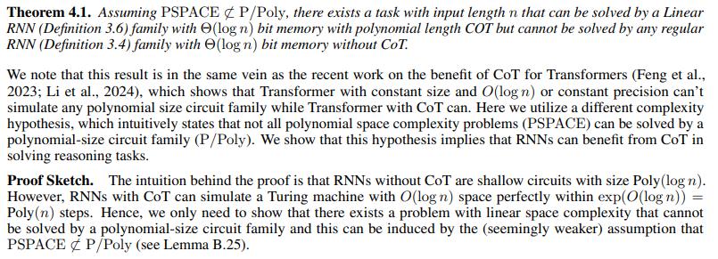
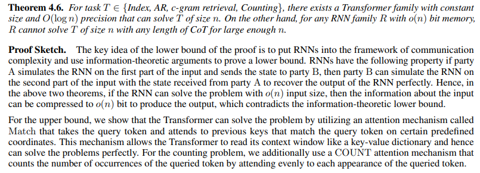
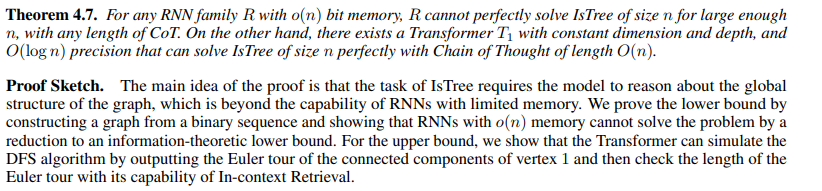
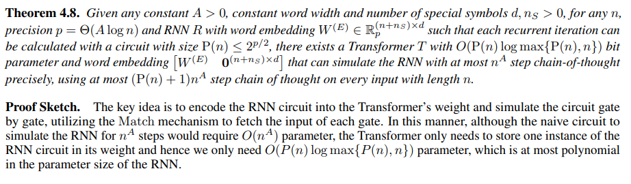
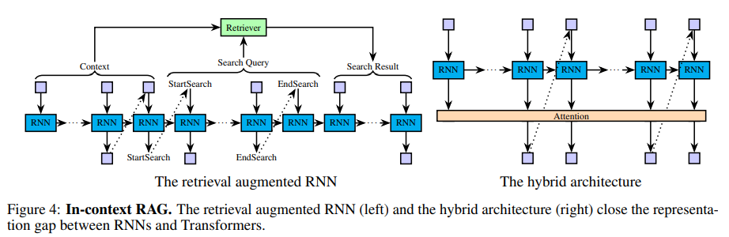
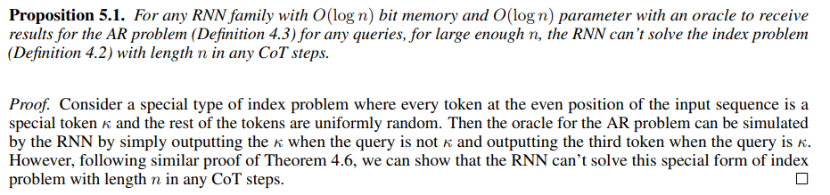
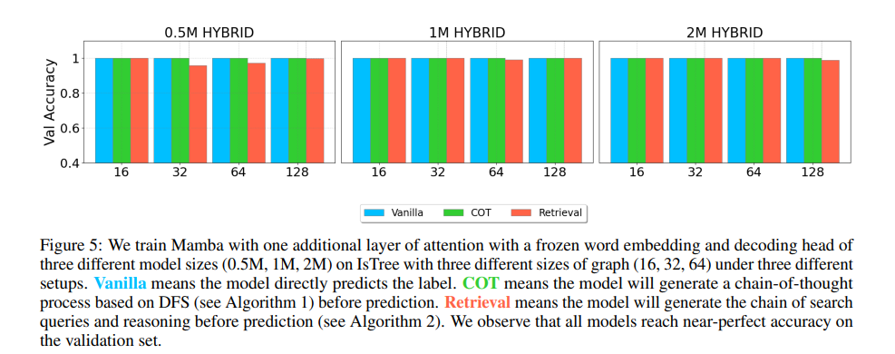

<!DOCTYPE html>


  <html lang="en">
    

    <head>
      <meta charset="utf-8" />
        
      <meta
        name="viewport"
        content="width=device-width, initial-scale=1, maximum-scale=1"
      />
      <title>RNNS ARE NOT TRANSFORMERS (YET) |  小熊的小站</title>
  <meta name="generator" content="hexo-theme-ayer">
      
      <link rel="shortcut icon" href="/favicon.ico" />
       
<link rel="stylesheet" href="/dist/main.css">

      
<link rel="stylesheet" href="/css/fonts/remixicon.css">

      
<link rel="stylesheet" href="/css/custom.css">
 
      <script src="https://cdn.staticfile.org/pace/1.2.4/pace.min.js"></script>
       

<script type="text/javascript">
(function(i,s,o,g,r,a,m){i['GoogleAnalyticsObject']=r;i[r]=i[r]||function(){
(i[r].q=i[r].q||[]).push(arguments)},i[r].l=1*new Date();a=s.createElement(o),
m=s.getElementsByTagName(o)[0];a.async=1;a.src=g;m.parentNode.insertBefore(a,m)
})(window,document,'script','//www.google-analytics.com/analytics.js','ga');

ga('create', 'UA-228563528-1', 'auto');
ga('send', 'pageview');

</script>


 
<script>
var _hmt = _hmt || [];
(function() {
	var hm = document.createElement("script");
	hm.src = "https://hm.baidu.com/hm.js?71ee62302f36ca8f840077a641705255";
	var s = document.getElementsByTagName("script")[0]; 
	s.parentNode.insertBefore(hm, s);
})();
</script>


      <link
        rel="stylesheet"
        href="https://cdn.jsdelivr.net/npm/@sweetalert2/theme-bulma@5.0.1/bulma.min.css"
      />
      <script src="https://cdn.jsdelivr.net/npm/sweetalert2@11.0.19/dist/sweetalert2.min.js"></script>

      <!-- mermaid -->
      
      <style>
        .swal2-styled.swal2-confirm {
          font-size: 1.6rem;
        }
      </style>
    </head>
  </html>
</html>


<body>
  <div id="app">
    
      
    <main class="content on">
      <section class="outer">
  <article
  id="post-20240303"
  class="article article-type-post"
  itemscope
  itemprop="blogPost"
  data-scroll-reveal
>
  <div class="article-inner">
    
    <header class="article-header">
       
<h1 class="article-title sea-center" style="border-left:0" itemprop="name">
  RNNS ARE NOT TRANSFORMERS (YET)
</h1>
 

      
    </header>
     
    <div class="article-meta">
      <a href="/2024/20240303/" class="article-date">
  <time datetime="2024-03-03T12:51:37.000Z" itemprop="datePublished">2024-03-03</time>
</a>   
<div class="word_count">
    <span class="post-time">
        <span class="post-meta-item-icon">
            <i class="ri-quill-pen-line"></i>
            <span class="post-meta-item-text"> Word count:</span>
            <span class="post-count">2.4k</span>
        </span>
    </span>

    <span class="post-time">
        &nbsp; | &nbsp;
        <span class="post-meta-item-icon">
            <i class="ri-book-open-line"></i>
            <span class="post-meta-item-text"> Reading time≈</span>
            <span class="post-count">8 min</span>
        </span>
    </span>
</div>
 
    </div>
      
    <div class="tocbot"></div>


  
    <div class="article-entry" itemprop="articleBody">
       
  <link rel="stylesheet" type="text&#x2F;css" href="https://cdn.jsdelivr.net/npm/hexo-tag-hint@0.3.1/dist/hexo-tag-hint.min.css"><p>论文：RNNS ARE NOT TRANSFORMERS (YET) -THE KEY BOTTLENECK ON IN-CONTEXT RETRIEVAL</p>
<p>本文研究了递归神经网络(rnn)和transformer在解决算法问题方面的表示能力差距。理论分析表明，CoT改善了rnn，但不足以缩小与transformer的差距。</p>
<p>我们证明，采用技术来增强 RNN 的上下文检索能力，包括检索增强生成（RAG）和添加单个 Transformer 层，可以使 RNN 能够通过 CoT 解决所有多项式时间可解决的问题，从而缩小了与transformer的代表性差距。</p>
<hr>
<span id="more"></span>

<h2 id="介绍"><a href="#介绍" class="headerlink" title="介绍"></a>介绍</h2><p>现代的RNN得到了一系列的发展，包括RWKV、RetNet和Mamba。</p>
<p>过去有许多研究证明了RNN不如Transformrt。比如2024年的《Repeat after me: Transformers are better than state space models at copying》证明常量记忆 RNN 没有足够的表示能力来解决对给定的输入向量子集进行平均的任务（q稀疏平均）和重复输入序列（复制），而存在可以解决这些任务的浅层 Transformer。</p>
<p>然而，上述结果并不排除通过额外的提示技术或微小的架构改变来增强 RNN 可能缩小与 Transformer 差距的可能性。事实上，Transformer 本身也不完美，可能需要在推理时使用额外的技术才能在某些任务上表现良好。作为一个著名的例子， 思想链 （CoT）  是一种提示技术，要求模型在给出最终答案之前生成一系列中间标记，众所周知，它对于 Transformers 在需要数学或算法推理的任务上表现良好至关重要。部分研究者从表示能力的角度解释了这一点：变压器本身没有足够的表示能力来解决超出特定电路复杂性类别的问题（$TC^0$)，但通过 CoT，他们甚至可以模拟任何多项式时间图灵机。</p>
<p>CoT 在 Transformers 上的有效性自然会引发以下问题：</p>
<p><strong>类似的增强（例如采用 CoT）能否改进 RNN，使其与 Transformer 相媲美？</strong></p>
<h3 id="本文贡献"><a href="#本文贡献" class="headerlink" title="本文贡献"></a>本文贡献</h3><p>本文通过研究各种方法来缩小 RNN 和 Transformer 在算法问题上的表示能力上的差距，从理论上回答了上述问题。通过一系列下限和上限结果，我们表明 CoT 提高了 RNN 的表示能力，但为了缩小与 Transformer 的差距，仅 CoT 不足以克服 RNN 的一个关键瓶颈：它们无法从上下文中检索信息，我们简称为上下文检索。</p>
<p>我们进一步说明，解决上下文检索瓶颈足以弥补这一差距：如果采用增强上下文检索能力的技术，包括涉及检索增强生成（RAG）和附加， RNN 可以解决所有多项式时间可解决的问题单个 Transformer 层。我们的主要贡献如下：</p>
<p>1.<strong>CoT 改进了 RNN，但无法缩小与 Transformer 的表示差距。</strong></p>
<ul>
<li><p>从积极的一面来看，CoT 使 RNN 严格具有更强的表达能力。</p>
</li>
<li><p>从消极的一面来看，我们表明采用 CoT 不足以缩小 RNN 和Transformer 之间的表示差距：RNN 的内存效率从根本上限制了它们执行上下文检索的能力，即使使用 CoT 也是如此。通过证明带有 CoT 的 RNN 无法解决一组直接要求上下文检索（包括联想召回）的基本算法问题，这一点得到了具体体现。通过证明 RNN 无法解决确定图是否是树的经典问题，我们进一步举例说明了在看似不相关的任务中隐含地需要上下文检索。</p>
</li>
<li><p>另一方面，我们证明 Transformers 具有轻松解决上述许多任务的表征能力，包括判断是否是树。此外，具有 CoT 的 Transformers 甚至可以有效地模拟具有 CoT 的 RNN，而参数数量只需要很小的乘法因子。</p>
</li>
</ul>
<ol start="2">
<li><strong>增强 RNN 的上下文检索能力可以缩小表示差距</strong></li>
</ol>
<ul>
<li><p>我们证明，允许 RNN 调用函数调用来执行特定的上下文检索原语，足以提高其表示能力，以解决 CoT 的所有多项式时间可解问题，从而缩小RNN 和 Transformer 之间的表示差距。</p>
</li>
<li><p>另外，由于一层 Transformer 足以执行许多上下文检索操作，因此我们证明，通过在架构末尾添加一个 Transformer 层来隐式增强 RNN 的上下文检索能力也足以缩小差距</p>
</li>
</ul>
<h2 id="CoT-能否提高-RNN-的表示能力？"><a href="#CoT-能否提高-RNN-的表示能力？" class="headerlink" title="CoT 能否提高 RNN 的表示能力？"></a>CoT 能否提高 RNN 的表示能力？</h2><p>在本节中，我们的目标是了解带有 CoT 的 RNN 的表示能力。</p>
<p>我们首先展示了积极的结果，即带有 CoT 的 RNN 可以解决在没有 CoT 固定状态大小的情况下 RNN 无法完成的任务。然后我们继续了解 CoT 是否可以使 RNN 具有像 Transformer 一样的表现力。</p>
<p>我们表明，即使使用 CoT，RNN 仍然难以解决明确需要上下文检索的问题，并且这种表示差距会传播到看似与检索无关的推理任务，例如 IsTree。最后，我们表明这种差距确实是单方面的：只存在 Transformer 需要的参数比 RNN 指数少的任务，但反之则不然。</p>
<h3 id="CoT-严格改进-RNN"><a href="#CoT-严格改进-RNN" class="headerlink" title="CoT 严格改进 RNN"></a>CoT 严格改进 RNN</h3><p></p>
<h3 id="CoT-无法缩小与-Transformer-的代表性差距"><a href="#CoT-无法缩小与-Transformer-的代表性差距" class="headerlink" title="CoT 无法缩小与 Transformer 的代表性差距"></a>CoT 无法缩小与 Transformer 的代表性差距</h3><h4 id="上下文检索的简单问题"><a href="#上下文检索的简单问题" class="headerlink" title="上下文检索的简单问题"></a>上下文检索的简单问题</h4><p>首先，我们证明 RNN 在解决几个直接测试上下文检索能力的简单算法问题时与 Transformer 存在显着的表示差距。</p>
<p></p>
<p>对于上限，我们证明 Transformer 可以通过利用称为“注意力机制”的注意力机制来解决问题匹配，它接受查询令牌并关注与某些预定义坐标上的查询令牌相匹配的先前键。这种机制允许Transformer像键值字典一样读取其上下文窗口，从而可以完美解决问题。对于计数问题，我们另外使用数数注意力机制，通过均匀地关注查询标记的每次出现来计算查询标记的出现次数。</p>
<h4 id="了解-RNN-超越简单上下文检索问题的表示能力"><a href="#了解-RNN-超越简单上下文检索问题的表示能力" class="headerlink" title="了解 RNN 超越简单上下文检索问题的表示能力"></a>了解 RNN 超越简单上下文检索问题的表示能力</h4><p>一个自然的问题是，如果算法问题不直接测试上下文检索能力，我们是否可以希望 RNN 具有解决它的表示能力？</p>
<p>在这种情况下，RNN 和 Transformer 是否具有相同的表示能力？</p>
<p>我们表明，RNN 中有限的内存大小仍然可能成为解决算法问题的瓶颈。即使检索能力没有在算法问题中显式测试，在推理答案时仍然可能隐式地需要它。</p>
<p>我们通过一个最小的算法问题示例（称为IsTree)：</p>
<p>给定一个无向图G的n节点，判断是否是一棵树，即每一对节点是否都由一条简单路径连接。 IsTree 的经典解决方案是运行深度优先搜索 (DFS)，它需要O(n)时间。</p>
<p></p>
<h4 id="Transformer-明显比-RNN-更具表现力"><a href="#Transformer-明显比-RNN-更具表现力" class="headerlink" title="Transformer 明显比 RNN 更具表现力"></a>Transformer 明显比 RNN 更具表现力</h4><p>上述定理表明，存在一些任务，其中 Transformer 所需的内存比 RNN 少得多。</p>
<p>然而，他们并没有排除是否存在相应任务，这种任务其中 Transformer 会比 RNN 更加冗余并且需要指数级更多的参数。</p>
<p>然而，以下定理证实了常规 RNN 不存在这样的任务。</p>
<p></p>
<h2 id="增强上下文检索能力缩小表征差距"><a href="#增强上下文检索能力缩小表征差距" class="headerlink" title="增强上下文检索能力缩小表征差距"></a>增强上下文检索能力缩小表征差距</h2><p>在 前面 中，我们表明 RNN 在上下文检索方面存在缺陷，因此导致与Transformer 的表示存在显着差距。</p>
<p>在本节中，我们的目标是了解：如果我们增强RNN 的上下文检索能力，RNN 与 Transformer 是否仍然存在表示差距？</p>
<p>我们通过考虑显式和隐式方法来增强上下文检索能力来回答这个问题，并表明这两种方法都可以缩小 RNN 和 Transformer 在解决算法问题时的表示差距。</p>
<p></p>
<h3 id="Explicit-Retrieval-Through-Regular-Expression"><a href="#Explicit-Retrieval-Through-Regular-Expression" class="headerlink" title="Explicit Retrieval Through Regular Expression"></a>Explicit Retrieval Through Regular Expression</h3><p>首先，我们探索 RNN 与检索增强生成 (RAG) 的强大功能，它使 LM 能够检索相关信息以协助生成。在我们的上下文中，我们特别感兴趣的是允许 LM 调用函数从其上下文中检索信息，我们将其称为In-context Retrieval Augmented Generation (In-context RAG).</p>
<p></p>
<h3 id="通过仅附加一层-Transformer-层进行隐式检索"><a href="#通过仅附加一层-Transformer-层进行隐式检索" class="headerlink" title="通过仅附加一层 Transformer 层进行隐式检索"></a>通过仅附加一层 Transformer 层进行隐式检索</h3><p>我们在本节中正式表明，这种形式的隐式检索可以缩小 RNN 和 Transformer 在解决算法问题时的表示差距。我们考虑以下混合架构，它通过将单个 Transformer 层附加到 RNN 输出来组合 RNN 和 Transformer。</p>
<h2 id="实验"><a href="#实验" class="headerlink" title="实验"></a>实验</h2><p></p>
<p>训练了三种不同的架构：</p>
<p>（1）LLaMa</p>
<p>（2）Mamba</p>
<p>（3） Mamba with one additional layer of LLaMA block representing hybrid architectures.</p>
<p>图中可观察到：</p>
<p>1.CoT 提高了 Transformer 和 RNN 的性能。然而，随着图尺寸的增加，RNN 的性能急剧下降，并且 Transformer 的性能始终优于 RNN。这与我们的理论一致，即 CoT 可以提高 RNN 模型的表达能力，但表达能力仍然不足以解决 IsTree 任务</p>
<p>2.通过正则表达式的检索增强使所有模型达到近乎完美的准确性。这与我们的理论一致，即通过正则表达式进行检索增强可以提高 RNN 模型解决算法任务的表达能力</p>
<p>3.混合模型显示了所有模型中最好的性能，即使没有 CoT 或显式检索增强也能达到近乎完美的精度，这也反映在理论结果中。</p>
 
      <!-- reward -->
      
    </div>
    

    <!-- copyright -->
    
    <footer class="article-footer">
       
<div class="share-btn">
      <span class="share-sns share-outer">
        <i class="ri-share-forward-line"></i>
        分享
      </span>
      <div class="share-wrap">
        <i class="arrow"></i>
        <div class="share-icons">
          
          <a class="weibo share-sns" href="javascript:;" data-type="weibo">
            <i class="ri-weibo-fill"></i>
          </a>
          <a class="weixin share-sns wxFab" href="javascript:;" data-type="weixin">
            <i class="ri-wechat-fill"></i>
          </a>
          <a class="qq share-sns" href="javascript:;" data-type="qq">
            <i class="ri-qq-fill"></i>
          </a>
          <a class="douban share-sns" href="javascript:;" data-type="douban">
            <i class="ri-douban-line"></i>
          </a>
          <!-- <a class="qzone share-sns" href="javascript:;" data-type="qzone">
            <i class="icon icon-qzone"></i>
          </a> -->
          
          <a class="facebook share-sns" href="javascript:;" data-type="facebook">
            <i class="ri-facebook-circle-fill"></i>
          </a>
          <a class="twitter share-sns" href="javascript:;" data-type="twitter">
            <i class="ri-twitter-fill"></i>
          </a>
          <a class="google share-sns" href="javascript:;" data-type="google">
            <i class="ri-google-fill"></i>
          </a>
        </div>
      </div>
</div>

<div class="wx-share-modal">
    <a class="modal-close" href="javascript:;"><i class="ri-close-circle-line"></i></a>
    <p>扫一扫，分享到微信</p>
    <div class="wx-qrcode">
      
    </div>
</div>

<div id="share-mask"></div>  
  <ul class="article-tag-list" itemprop="keywords"><li class="article-tag-list-item"><a class="article-tag-list-link" href="/tags/%E4%BA%BA%E5%B7%A5%E6%99%BA%E8%83%BD/" rel="tag">人工智能</a></li><li class="article-tag-list-item"><a class="article-tag-list-link" href="/tags/%E6%B7%B1%E5%BA%A6%E5%AD%A6%E4%B9%A0/" rel="tag">深度学习</a></li></ul>

    </footer>
  </div>

   
  <nav class="article-nav">
    
    
      <a href="/2024/20240229/" class="article-nav-link">
        <strong class="article-nav-caption">下一篇</strong>
        <div class="article-nav-title">BitNet b1.58</div>
      </a>
    
  </nav>

   
 
   
     
</article>

</section>
      <footer class="footer">
  <div class="outer">
    <ul>
      <li>
        Copyrights &copy;
        2019-2024
        <i class="ri-heart-fill heart_icon"></i> LJX
      </li>
    </ul>
    <ul>
      <li>
        
        
        
        Powered by <a href="https://hexo.io" target="_blank">Hexo</a>
        <span class="division">|</span>
        Theme - <a href="https://github.com/Shen-Yu/hexo-theme-ayer" target="_blank">Ayer</a>
        
      </li>
    </ul>
    <ul>
      <li>
        
        
        <span>
  <span><i class="ri-user-3-fill"></i>Visitors:<span id="busuanzi_value_site_uv"></span></span>
  <span class="division">|</span>
  <span><i class="ri-eye-fill"></i>Views:<span id="busuanzi_value_page_pv"></span></span>
</span>
        
      </li>
    </ul>
    <ul>
      
    </ul>
    <ul>
      
    </ul>
    <ul>
      <li>
        <!-- cnzz统计 -->
        
        <script type="text/javascript" src='https://s9.cnzz.com/z_stat.php?id=1278069914&amp;web_id=1278069914'></script>
        
      </li>
    </ul>
  </div>
</footer>    
    </main>
    <div class="float_btns">
      <div class="totop" id="totop">
  <i class="ri-arrow-up-line"></i>
</div>

<div class="todark" id="todark">
  <i class="ri-moon-line"></i>
</div>

    </div>
    <aside class="sidebar on">
      <button class="navbar-toggle"></button>
<nav class="navbar">
  
  <div class="logo">
    <a href="/"></a>
  </div>
  
  <ul class="nav nav-main">
    
    <li class="nav-item">
      <a class="nav-item-link" href="/">主页</a>
    </li>
    
    <li class="nav-item">
      <a class="nav-item-link" href="/archives">目录</a>
    </li>
    
    <li class="nav-item">
      <a class="nav-item-link" href="/about">关于本站</a>
    </li>
    
    <li class="nav-item">
      <a class="nav-item-link" href="/about_me">关于我</a>
    </li>
    
    <li class="nav-item">
      <a class="nav-item-link" href="/photos">人间烟火</a>
    </li>
    
    <li class="nav-item">
      <a class="nav-item-link" target="_blank" rel="noopener" href="https://act18l.github.io/">欧拉计划</a>
    </li>
    
  </ul>
</nav>
<nav class="navbar navbar-bottom">
  <ul class="nav">
    <li class="nav-item">
      
      <a class="nav-item-link nav-item-search"  title="Search">
        <i class="ri-search-line"></i>
      </a>
      
      
    </li>
  </ul>
</nav>
<div class="search-form-wrap">
  <div class="local-search local-search-plugin">
  <input type="search" id="local-search-input" class="local-search-input" placeholder="Search...">
  <div id="local-search-result" class="local-search-result"></div>
</div>
</div>
    </aside>
    <div id="mask"></div>

<!-- #reward -->
<div id="reward">
  <span class="close"><i class="ri-close-line"></i></span>
  <p class="reward-p"><i class="ri-cup-line"></i>请我喝杯咖啡吧~</p>
  <div class="reward-box">
    
    <div class="reward-item">
      
      <span class="reward-type">支付宝</span>
    </div>
    
    
    <div class="reward-item">
      
      <span class="reward-type">微信</span>
    </div>
    
  </div>
</div>
    
<script src="/js/jquery-3.6.0.min.js"></script>
 
<script src="/js/lazyload.min.js"></script>

<!-- Tocbot -->
 
<script src="/js/tocbot.min.js"></script>

<script>
  tocbot.init({
    tocSelector: ".tocbot",
    contentSelector: ".article-entry",
    headingSelector: "h1, h2, h3, h4, h5, h6",
    hasInnerContainers: true,
    scrollSmooth: true,
    scrollContainer: "main",
    positionFixedSelector: ".tocbot",
    positionFixedClass: "is-position-fixed",
    fixedSidebarOffset: "auto",
  });
</script>

<script src="https://cdn.staticfile.org/jquery-modal/0.9.2/jquery.modal.min.js"></script>
<link
  rel="stylesheet"
  href="https://cdn.staticfile.org/jquery-modal/0.9.2/jquery.modal.min.css"
/>
<script src="https://cdn.staticfile.org/justifiedGallery/3.8.1/js/jquery.justifiedGallery.min.js"></script>

<script src="/dist/main.js"></script>

<!-- ImageViewer -->
 <!-- Root element of PhotoSwipe. Must have class pswp. -->
<div class="pswp" tabindex="-1" role="dialog" aria-hidden="true">

    <!-- Background of PhotoSwipe. 
         It's a separate element as animating opacity is faster than rgba(). -->
    <div class="pswp__bg"></div>

    <!-- Slides wrapper with overflow:hidden. -->
    <div class="pswp__scroll-wrap">

        <!-- Container that holds slides. 
            PhotoSwipe keeps only 3 of them in the DOM to save memory.
            Don't modify these 3 pswp__item elements, data is added later on. -->
        <div class="pswp__container">
            <div class="pswp__item"></div>
            <div class="pswp__item"></div>
            <div class="pswp__item"></div>
        </div>

        <!-- Default (PhotoSwipeUI_Default) interface on top of sliding area. Can be changed. -->
        <div class="pswp__ui pswp__ui--hidden">

            <div class="pswp__top-bar">

                <!--  Controls are self-explanatory. Order can be changed. -->

                <div class="pswp__counter"></div>

                <button class="pswp__button pswp__button--close" title="Close (Esc)"></button>

                <button class="pswp__button pswp__button--share" style="display:none" title="Share"></button>

                <button class="pswp__button pswp__button--fs" title="Toggle fullscreen"></button>

                <button class="pswp__button pswp__button--zoom" title="Zoom in/out"></button>

                <!-- Preloader demo http://codepen.io/dimsemenov/pen/yyBWoR -->
                <!-- element will get class pswp__preloader--active when preloader is running -->
                <div class="pswp__preloader">
                    <div class="pswp__preloader__icn">
                        <div class="pswp__preloader__cut">
                            <div class="pswp__preloader__donut"></div>
                        </div>
                    </div>
                </div>
            </div>

            <div class="pswp__share-modal pswp__share-modal--hidden pswp__single-tap">
                <div class="pswp__share-tooltip"></div>
            </div>

            <button class="pswp__button pswp__button--arrow--left" title="Previous (arrow left)">
            </button>

            <button class="pswp__button pswp__button--arrow--right" title="Next (arrow right)">
            </button>

            <div class="pswp__caption">
                <div class="pswp__caption__center"></div>
            </div>

        </div>

    </div>

</div>

<link rel="stylesheet" href="https://cdn.staticfile.org/photoswipe/4.1.3/photoswipe.min.css">
<link rel="stylesheet" href="https://cdn.staticfile.org/photoswipe/4.1.3/default-skin/default-skin.min.css">
<script src="https://cdn.staticfile.org/photoswipe/4.1.3/photoswipe.min.js"></script>
<script src="https://cdn.staticfile.org/photoswipe/4.1.3/photoswipe-ui-default.min.js"></script>

<script>
    function viewer_init() {
        let pswpElement = document.querySelectorAll('.pswp')[0];
        let $imgArr = document.querySelectorAll(('.article-entry img:not(.reward-img)'))

        $imgArr.forEach(($em, i) => {
            $em.onclick = () => {
                // slider展开状态
                // todo: 这样不好，后面改成状态
                if (document.querySelector('.left-col.show')) return
                let items = []
                $imgArr.forEach(($em2, i2) => {
                    let img = $em2.getAttribute('data-idx', i2)
                    let src = $em2.getAttribute('data-target') || $em2.getAttribute('src')
                    let title = $em2.getAttribute('alt')
                    // 获得原图尺寸
                    const image = new Image()
                    image.src = src
                    items.push({
                        src: src,
                        w: image.width || $em2.width,
                        h: image.height || $em2.height,
                        title: title
                    })
                })
                var gallery = new PhotoSwipe(pswpElement, PhotoSwipeUI_Default, items, {
                    index: parseInt(i)
                });
                gallery.init()
            }
        })
    }
    viewer_init()
</script> 
<!-- MathJax -->
 <script type="text/x-mathjax-config">
  MathJax.Hub.Config({
      tex2jax: {
          inlineMath: [ ['$','$'], ["\\(","\\)"]  ],
          processEscapes: true,
          skipTags: ['script', 'noscript', 'style', 'textarea', 'pre', 'code']
      }
  });

  MathJax.Hub.Queue(function() {
      var all = MathJax.Hub.getAllJax(), i;
      for(i=0; i < all.length; i += 1) {
          all[i].SourceElement().parentNode.className += ' has-jax';
      }
  });
</script>

<script src="https://cdn.staticfile.org/mathjax/2.7.7/MathJax.js"></script>
<script src="https://cdn.staticfile.org/mathjax/2.7.7/config/TeX-AMS-MML_HTMLorMML-full.js"></script>
<script>
  var ayerConfig = {
    mathjax: true,
  };
</script>

<!-- Katex -->
 
    
        <link rel="stylesheet" href="https://cdn.staticfile.org/KaTeX/0.15.1/katex.min.css">
        <script src="https://cdn.staticfile.org/KaTeX/0.15.1/katex.min.js"></script>
        <script src="https://cdn.staticfile.org/KaTeX/0.15.1/contrib/auto-render.min.js"></script>
        
    
 
<!-- busuanzi  -->
 
<script src="/js/busuanzi-2.3.pure.min.js"></script>
 
<!-- ClickLove -->

<!-- ClickBoom1 -->

<!-- ClickBoom2 -->

<!-- CodeCopy -->
 
<link rel="stylesheet" href="/css/clipboard.css">
 <script src="https://cdn.staticfile.org/clipboard.js/2.0.10/clipboard.min.js"></script>
<script>
  function wait(callback, seconds) {
    var timelag = null;
    timelag = window.setTimeout(callback, seconds);
  }
  !function (e, t, a) {
    var initCopyCode = function(){
      var copyHtml = '';
      copyHtml += '<button class="btn-copy" data-clipboard-snippet="">';
      copyHtml += '<i class="ri-file-copy-2-line"></i><span>COPY</span>';
      copyHtml += '</button>';
      $(".highlight .code pre").before(copyHtml);
      $(".article pre code").before(copyHtml);
      var clipboard = new ClipboardJS('.btn-copy', {
        target: function(trigger) {
          return trigger.nextElementSibling;
        }
      });
      clipboard.on('success', function(e) {
        let $btn = $(e.trigger);
        $btn.addClass('copied');
        let $icon = $($btn.find('i'));
        $icon.removeClass('ri-file-copy-2-line');
        $icon.addClass('ri-checkbox-circle-line');
        let $span = $($btn.find('span'));
        $span[0].innerText = 'COPIED';
        
        wait(function () { // 等待两秒钟后恢复
          $icon.removeClass('ri-checkbox-circle-line');
          $icon.addClass('ri-file-copy-2-line');
          $span[0].innerText = 'COPY';
        }, 2000);
      });
      clipboard.on('error', function(e) {
        e.clearSelection();
        let $btn = $(e.trigger);
        $btn.addClass('copy-failed');
        let $icon = $($btn.find('i'));
        $icon.removeClass('ri-file-copy-2-line');
        $icon.addClass('ri-time-line');
        let $span = $($btn.find('span'));
        $span[0].innerText = 'COPY FAILED';
        
        wait(function () { // 等待两秒钟后恢复
          $icon.removeClass('ri-time-line');
          $icon.addClass('ri-file-copy-2-line');
          $span[0].innerText = 'COPY';
        }, 2000);
      });
    }
    initCopyCode();
  }(window, document);
</script>
 
<!-- CanvasBackground -->
 
<script src="/js/dz.js"></script>
 
<script>
  if (window.mermaid) {
    mermaid.initialize({ theme: "forest" });
  }
</script>


    
    

  </div>
</body>

</html>